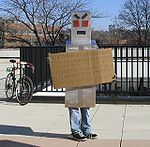
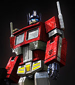
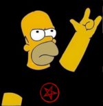

De: La Frikipedia, la enciclopedia extremadamente seria.
De: La Frikipedia, la enciclopedia extremadamente seria. De: La Frikipedia, la enciclopedia extremadamente seria.
«Yo soy su mayor enemigo»
~ El Gran 2 En una entrevista con Un Historiador
| De la serie imperios antiguos: | |||||
| Imperio 1 | |||||
| |||||
| Lema: Roba lo que puedas | |||||
| Himno: Cani inmarcesible
| |||||
|
| |||||
| Capital(es) | Eran muy cool para tener capital | ||||
| Mayor ciudad | (H) Tambien para hacer ciudades | ||||
| Lenguas oficiales | Turco,Binario | ||||
| Religión oficial | Saqueismo,Jashinismo | ||||
| Gobierno | Todos detras del mas corpulento!!! | ||||
| Rugila | Atila el 1 | ||||
| Fecha de fundación | en el año 1 D.C | ||||
| Caída | Cuando inventaron a los britanicos | ||||
| Edad de oro | Cuando Mando Atila | ||||
| Periodo de Estancamiento o reseción | Cuando llegaron Robocop y Cyberjesus | ||||
| Máxima Extensión | toda Europa oriental | ||||
| Forma de economía | Lo que tengan en los bolsillos sirve | ||||
| Estados que se despacho | Destruyeron todo el | ||||
| Población calculada | 5000 Guerreros y 6000 Caballos | ||||
| Moneda | el Rhin | ||||
| Zona horaria | usan a la roca gigante de noche | ||||
| Legado(s) | Cani,Ñero y otros ladrones | ||||
| ¿Por que se vino abajo? | Llegaron los Jebis a destruirlos | ||||
| | |||||
El numero 1 es básico en la numeración decimal y te equivocaste de articulo,este habla sobre los hunos,una banda de jinetes pestilentes que andan por todo el mundo saqueando cosas como los piratas terrestres que son pero ademas son recordados por inventar la vida nómada a medias,en la cual te ibas de la ciudad solamente cuando el desorden era imposible de limipiar
Ellos empezaron a difundirse por todas las naciones terminadas en iztan,como Kazakstán,Tayikistán,Pakistán,Aspaniakistan y cocokistan,debido a que todos hablaban la lengua pirata por excelencia,el turco,al aplicar la Piratería terrestre tuvieron que dividir el territorio para que la gente supiera donde y cuando atacar.
Su primer objetivo fue China,pero ellos tenian un impedimento muy insignificante llamado la gran muralla India (los chinos se robarían el crédito después) que intentaron atravesar con diferentes artilugios como saltinbanquis,trampolines,Flubber,Saltos ninja,arrojandole un Estupido cuadernajo pero ninguno de ellos funciono con exito convirtiendo a los Hunos en una bola de Emos con cerebro de insecto retrasado.
Durante la Dinastia Can-Ihe-Moh (お長城 ) los hunos alquilaron sus servicios como acompañantes muy intimos guardaespaldas del gran emperador
Darth-Wun-Han (山海關) para que estos protegieran al rey de sus enemigos Caniman,El creador del virus Emo-X y Steven Seagal,el trato persistió durante muchos años ya que el rey les daba a los hunos una provisión vitalicia de Scooby-Galletas,Vino y Shampoo ademas de que el líder de los hunos y el emperador eran muy íntimos al punto de que entraban a un cuarto oscuro y nadie sabia que hacian durante ese tiempo,pero siempre ambos salían con un contento absoluto.
Al termino del Reinado del emperador los hunos volvieron a la guerra con los chinos ya que el siguiente emperador no era tan Gay como el líder huno de esa época,Rugilo, creía y se fue furioso a reclamar el trono y matar al emperador por no compartir sus gustos
Aqui la campaña militar se baso en una estrategia de movimientos de buscaminas tan avanzados que podian pasar un campo de 300 cuadros con 299 minas,la exactitud de los hunos en el Pinball era tal que un emperador romano llamado Antonio Barbarigo XVIIXC los describia de la siguiente manera:

|
Pequeños y toscos, imberbes como eunucos,aunque no se que es eso, con unas caras horribles en las que apenas pueden reconocerse los rasgos humanos,como las de los Jonas Brothers. Diríase que más que hombres son bestias que caminan sobre dos patas y una girobola. Llevan una casaca de tela forrada con piel de gato salvaje Con Plumas de un loro pulpo y pieles de cabra alrededor de las piernas. Y parecen pegados a sus caballos. Sobre ellos comen, beben,se aparean,ven el fútbol,hacen crucigramas,destruyen los servidores de Copias Baratas de la frikipedia, duermen reclinados en las crines, tratan sus asuntos y emprenden sus deliberaciones. Y hasta cocinan en esa posición, porque en vez de cocer la carne con que se alimentan, se limitan a entibiarla manteniéndola entre la grupa del caballo y sus propios muslos. No cultivan el campo ni conocen la casa. Descabalgan solo para ir al encuentro de sus mujeres y de sus niños, que siguen en carros y motos su errabunda existencia de devastadores. | 
|
| Tonto Ramanae Huni (Descripcion de los dos) |
Los Al-Qaeda que eran dirigidos por su lider Osama Bin Laden y aunque de todas maneras los hunos hicieron lo que pudieron para ganar,al-qaeda los derroto y luego ejecuto al gran hechicero Lord Valdomero Sapor
Luego de esta humillante derrota los tipos esos hunos volvieron a roma,a saquearla y dejarla como un montón de ruinas otra vez,de paso abrieron varias sucursales de Oscar. La leccion historica que nos deja este hecho se resume en 3 sencillas pero importantes cosas que aprender para dirigir una civilizacion:
Debemos dejar muchas cosas en claro antes de que la cabeza te estalle,los hunos no tenian cultura propia y se dedicaban a destruir la de los demas pero tenian ciertas costumbres que se implantaron en la cultura jebi del mundo como eran:
| Malvado Enemigo | Retrato Hablado | Descripción. |
|---|---|---|
| Robocop |  |
El rey de todas las calles con un Lamborghini Murcielago y tambien posseedor del titulo de robot mas temerario al eliminar a atila el huno con varios disparos a la cabeza y pasandole por encima aquel auto diabolico |
| Cyberjesus |  |
Destructor del mundo,aniquilado de el universo,dueño de los sandiwches con pepinillos,Cyberjesus es el unico ser que ha destruido a 2 jefes Hunos al Hilo,pero debemos recordar que estaba bajo el mando de el rey 2 |
| Heavys Warriors |  |
Uno de los mayores enemigos de los hunos al ser los unicos iguales de fuertes y salvajes,pero eran mas inteligentes |
Autor(es):